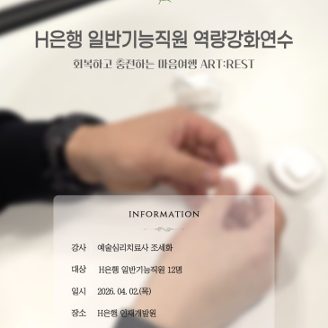
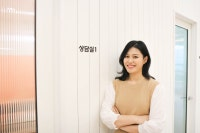
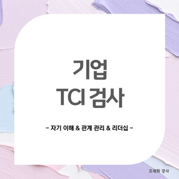
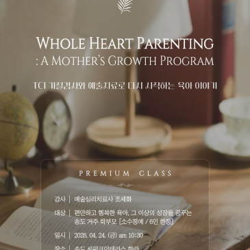
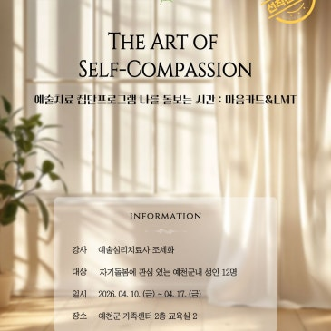

기업교육
ART:REST 내면회복 워크숍
업무 속 소진을 알아차리고, 예술심리 활동으로 자신만의 회복 루틴을 설계합니다.
Art Psychology for Workplace Recovery
예술심리치료사 조세화는 기업과 기관의 구성원이 스스로의 감정, 스트레스, 관계를 안전하게 돌아볼 수 있도록 예술심리, TCI, 자기돌봄을 결합한 교육과 워크숍을 제공합니다.

마음이 힘들 때 잠시 쉬어갈 수 있는 공간. 일상적인 것을 인상적으로 만드는 마음 이야기.
Profile
조세화는 예술심리치료사이자 심리상담사, 기업교육 강사로서 마음관리와 회복을 주제로 기업, 기관, 가족센터, 교육 현장을 연결해 왔습니다. 블로그에는 기업 워크숍, 부모교육, 집단상담, 칼럼, 연구 자료가 함께 축적되어 있어 전문성과 현장성을 동시에 보여줍니다.
Programs

업무 속 소진을 알아차리고, 예술심리 활동으로 자신만의 회복 루틴을 설계합니다.

유형 분류보다 자기 이해와 타인 존중에 초점을 맞춘 TCI 해석 교육을 진행합니다.

아이의 기질을 이해하는 동시에 부모 자신의 마음을 돌아보는 참여형 세미나입니다.

지역 기관과 소규모 집단에 맞춰 심리정서 지원과 자기돌봄 경험을 설계합니다.
Proof
2026.04
일반기능직원 대상 예술심리 기반 내면성찰과 회복 프로그램 진행 사례.
2026.04
일하는 현장의 마음돌봄을 위한 강사 역할과 공공기관 신뢰 확보.
2026.03
예술심리치료사이자 알음다움 부대표로 소개된 외부 매체 기록.
2026.04
직장인의 회복탄력성, 감정관리, 일상회복을 다루는 전문 칼럼 활동.
Curriculum
Contact
대상, 인원, 시간, 조직 이슈를 알려주시면 교육 목적에 맞춰 커리큘럼을 조정할 수 있습니다.